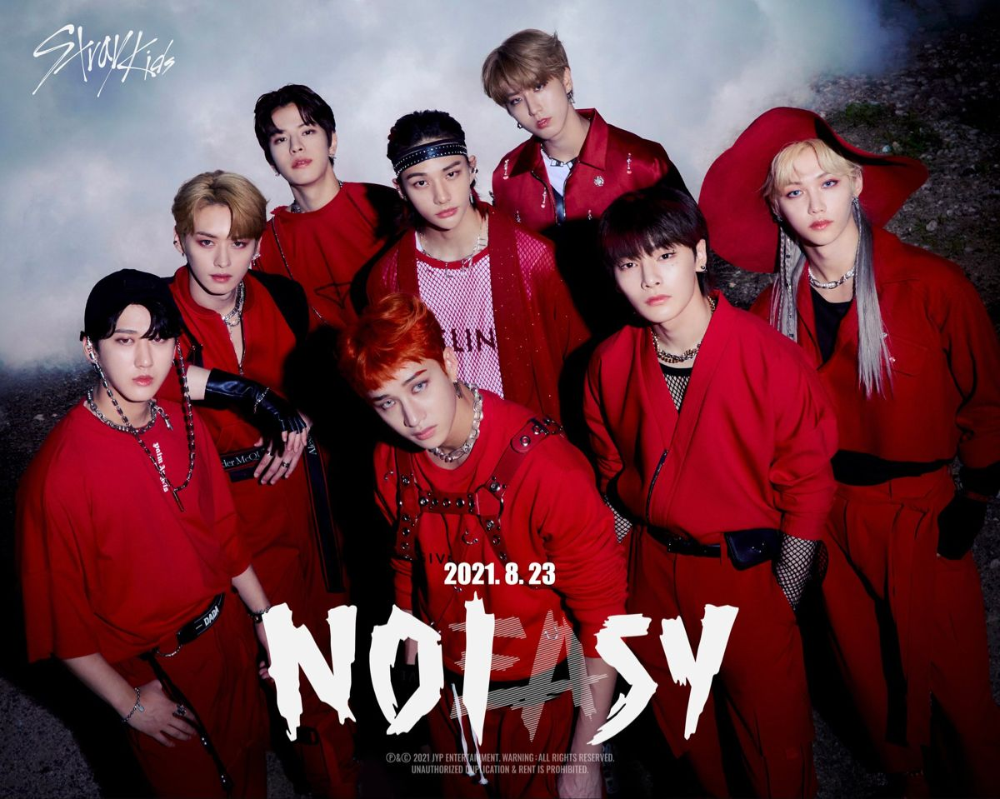

★ NOEASY ★
2021
"Ignorar el ruido y seguir adelante."

|
Tras ganar el programa de competencia Kingdom: Legendary War en junio de 2021,
Stray Kids llegó con fuerza renovada a su segundo álbum de estudio, Noeasy, lanzado el 23 de agosto de 2021.
El sencillo principal, "Thunderous", se inspiró en el pansori, un estilo tradicional coreano de canto, fusionado con sonidos electrónicos y de hip-hop. El álbum se convirtió en el primer trabajo del grupo en superar el millón de copias vendidas, marcando un antes y un después en su carrera. |
FICHA DE LA ERA
| Periodo | Junio - Agosto 2021 |
| Logro previo | Ganadores de Kingdom: Legendary War (Mnet) |
| Álbum | Noeasy (23 de agosto de 2021) - 2do álbum de estudio |
| Sencillo principal | Thunderous |
| Logro | Primer álbum "million seller" del grupo |

NOEASY representó la fuerza de un grupo que, sin importar las críticas, decidió alzar la voz aún más fuerte.
"No es fácil, pero tampoco imposible."
★ VOLVER AL INICIO ★